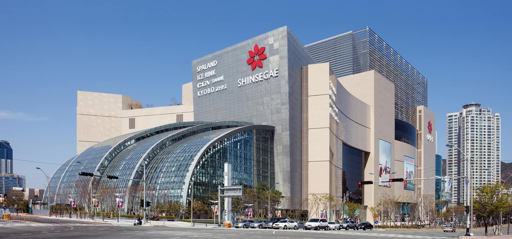

부산국제영화제는 매년 가을 대한민국 부산광역시 영화의전당 일원에서 개최되는 국제영화제다. 도쿄, 홍콩국제영화제와 더불어 아시아 최대 규모의 영화제다. 부분경쟁을 도입한 비경쟁영화제로 국제영화제작자연맹의 공인을 받은 영화제이다.

부산광역시 해운대구 우동 센텀시티에 위치한 신세계백화점. 2009년 개점했다. 현존하는 세계 최대 규모의 백화점이다.
대한민국 제1호 공설해수욕장인 송도해수욕장에 부산 최대 규모의 스카이워크 ‘구름산책로’가 있다. 구름산책로에서 바라보는 송도 바다는 너무나 아름답다. 저 멀리 대형 선박이 점점이 떠 있고, 하늘 위로는 색색의 케이블카가 오르내린다. 직선과 곡선 코스로 길게 이어진 산책로는 양 옆으로도 바다, 아래로도 바다다. 온전히 바다 위를 걷는 것 같다.
부산광역시 사상구 사상로 201 (괘법동)에 위치한 고속버스, 시외버스 터미널이다. 천일여객이 소유하고 있다. 예매는 고속버스는 코버스에서 시외버스는 버스타고에서 예매할 수 있다. 2015년 11월 17일 이전에는 터미널협회에서 예매할 수 있었다.
부산광역시 부도심의 하나로 해운대해수욕장과 광안리해수욕장을 비롯하여 동백섬, 영화의전당, 달맞이고개, 해운대온천, 오륙도, UN기념공원, 수영사적공원, 광안대교 등의 부산의 상징들과 유명 관광지가 있고 호텔, 식당가, 영화관 및 쇼핑몰 등 위락 시설이 많으며 해운대 신시가지와 마린시티에는 대규모 주거단지가 있다. 해운대해수욕장, 광안리해수욕장, 벡스코(BEXCO), 누리마루 등이 있어서 국내외 많은 관광객이 찾고 있다.
광안대교는 개통과 동시에 전 구간이 국토교통부 도로관리청에서 자동차 전용도로로 지정되어 있으므로 이로 인해 보행자, 자전거, 손수레, 우마차 등은 통행이 금지되어 있다. 이륜자동차(모터사이클 혹은 오토바이)의 경우는 긴급자동차로 지정된 이륜자동차(싸이카 및 소방용 모터사이클 등)에 한해 통행이 가능하나 그 밖의 이륜자동차와 초소형 전기차, 농기계 등은 통행이 금지되어 있다. 광안대교는 2층 교량으로 각 방향별 일방 통행 구조이며, 빠른 관리를 위해 두 층의 관할 경찰서, 구청이 다르다. 상층부는 해운대구에서 수영구 방향이므로 해운대구에서 진입이 편리하여 해운대구청, 해운대경찰서 관할이고 하층부는 그 반대 이유로 인해 수영구청과 부산남부경찰서 관할이다. 광안대교 광안대로의 개통으로 수영로와 해운대 지역의 만성적인 교통체증을 획기적으로 개선하게 되었고 광안대로의 개통으로 수영로와 해운대 지역의 만성적인 교통체증을 획기적으로 개선하게 되었고 항만 물동량을 신속하게 경부고속도로와 연결 하여 물류비용의 감소와 수출경쟁력 제고에 기여하고 있으며, 또한 최첨단 부산 정보업무 복합단지인 센텀시티의 기능을 극대화 하게 되며, 광안리, 해운대 관광특구와 연계하여 관광명소로 활용되어 해상 관광의 활력을 높이고 부산이 세계적인 무역도시이자 해양도시로 뻗어나가는데 일익을 담당하고 있디. 교량으로서의 기능 뿐만 아니라 상층부에서 바라보는 주변경관이 일품으로 바다, 오륙도, 광안대로를 둘러싼 황령산과 아기자기한 백사장, 해운대 동백섬과 달맞이 고개 등이 한눈에 들어온다. 조명 시스템이 구축되어 10만가지 이상의 색상으로 연출할 수 있는 경관조명이 유명하다.
부산광역시 해운대구 중동에 있는 초고층 빌딩으로 한국에서 두 번째로 높다.[2] 비수도권에서 최초이자 현재 유일한 100층 이상 마천루이다. 시행사는 엘시티PFV로 101층, 411.6m 높이의 랜드마크타워에는 롯데 6성급 호텔(260실)과 레지던스호텔(561실) 및 전망대가 들어서며, 85층의 주거타워 2개동(높이 각 339m, 333m)에는 공동주택 즉, 주상복합 아파트가 들어섰다. 총 3개의 마천루 단지인 셈. 2019년 12월 완공되어 기존 부산에서 가장 높은 건물이던 해운대 두산위브 더 제니스를 넘어서 부산에서 가장 높은 건물이 되었다. 본래 부산 중구의 롯데타운타워가 엘시티 높이를 넘어서는 510m 규모로 지어질 예정이었는데, 타워의 계획이 변경되면서 계획높이가 300m로 크게 낮아져서 롯데타운타워가 훗날 완공되더라도 한동안은 엘시티가 부산에서 가장 높은 건물이라는 타이틀을 계속 유지하게 된다. 서울의 잠실 롯데월드타워에 이어 국내에서는 2번째로 높은 건물이 되었다.